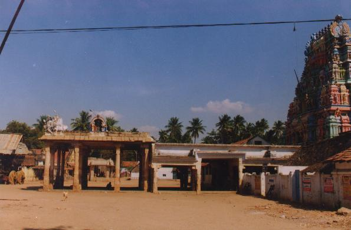

kaṭampantuṟai
- Identifier: KT002
- Modern Name (NIC):
- Modern Name (M.I.): kaṭampar kōyil
- Modern Name (Govt Press): kaṭamparkōvil
- Modern Name: kaṭampar kōyil
- Modern District & Taluk: karūr DT (kuḷittalai TK)
- Old administrative location: Trichy DT (kuḷittalai TK)
- Nearby town: kuḷittalai
- Visit date: 25 january 2000 (Charlotte SCHMID)
- GPS reading: 10 deg. 57' & 78 deg. 25'
- Railway station: kuḷittalai
- Post Office: kuḷittalai
- Longit. 78 deg. 25'; Latit. 10 deg. 57' [KT002]
- C.D.Maclean-3: entry: COOLITALAY, p. 213, col. 1,
[Cadambar coil (in Places of archaeological interest)]
- Location: according to PK: Cōḻa Nāṭu, Kāvēri Teṉ Karai (KT002)
- Name inside hymns:
- Name inside PK:
- Rank inside third volume of PIFI: 61
- Rank inside Civastala Mañcari: 61
- Rank on PY576 map:
- Total number of patikam-s: 1
- Appar: 1 patikam
3 pictures taken on 2000 january 25th (by G. Ravindran and C. Schmid)



- Patikam 5_18